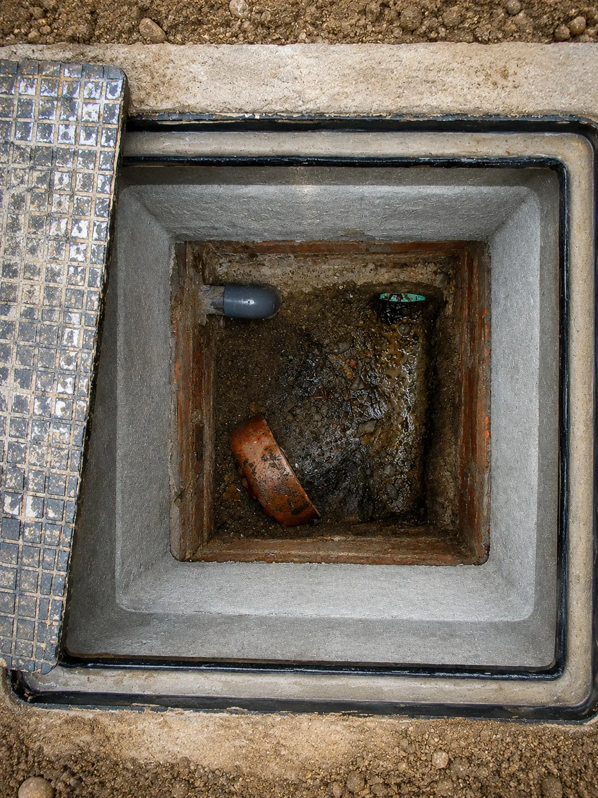
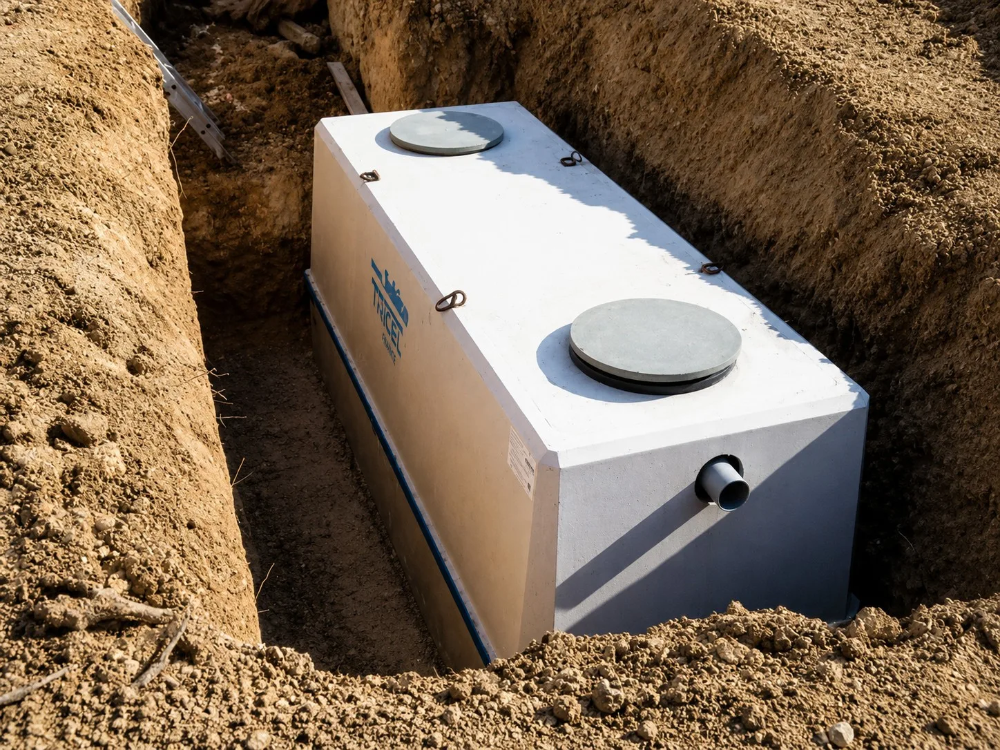
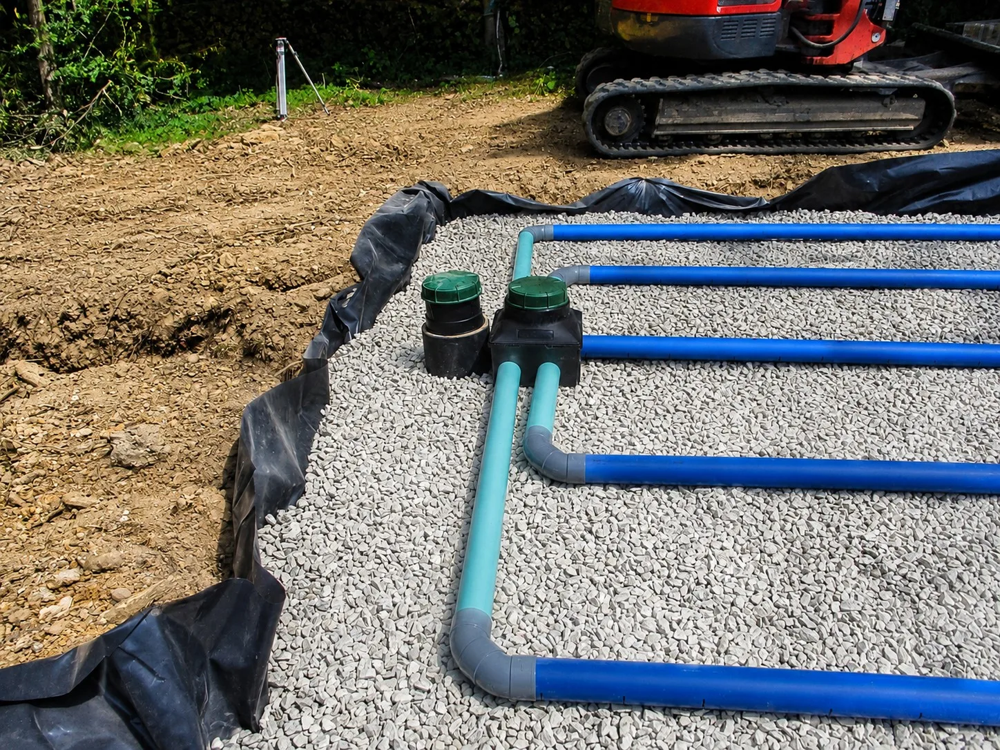

Regard de contrôle
Inspection d’un ouvrage existant pour vérifier l’état et le bon écoulement des effluents.

Au Sénégal, l’assainissement autonome constitue un enjeu majeur de santé publique, de protection de l’environnement et de qualité de vie, notamment dans les zones non raccordées aux réseaux d’assainissement collectif. Une solution d’assainissement mal conçue ou mal entretenue peut entraîner des pollutions des sols et des nappes phréatiques, des nuisances sanitaires et des risques pour les populations. Pour répondre à ces défis, HYDREAUPRO propose des solutions d’assainissement autonome fiables, durables et conformes aux normes, garantissant une gestion efficace et sécurisée des eaux usées domestiques et assimilées.
HYDREAUPRO accompagne les particuliers, professionnels et porteurs de projets dans la planification, la conception, la réalisation et l’entretien de leurs ouvrages d’assainissement autonome.
Quelques visuels concrets pour montrer les types d’ouvrages et d’interventions liés à cette prestation.

Inspection d’un ouvrage existant pour vérifier l’état et le bon écoulement des effluents.

Équipement installé pour le traitement primaire et le stockage des eaux usées.

Canalisations destinées à une gestion maîtrisée des eaux à traiter.
HYDREAUPRO intervient sur l’ensemble du territoire sénégalais pour accompagner les projets résidentiels, professionnels et collectifs non raccordés au réseau d’assainissement.
Solutions adaptées aux maisons, villas et parcelles non raccordées.
Approches compatibles avec les projets résidentiels collectifs hors réseau.
Prise en compte des usages, des volumes et des exigences d’hygiène.
Réponses dimensionnées pour des contextes d’implantation variés.